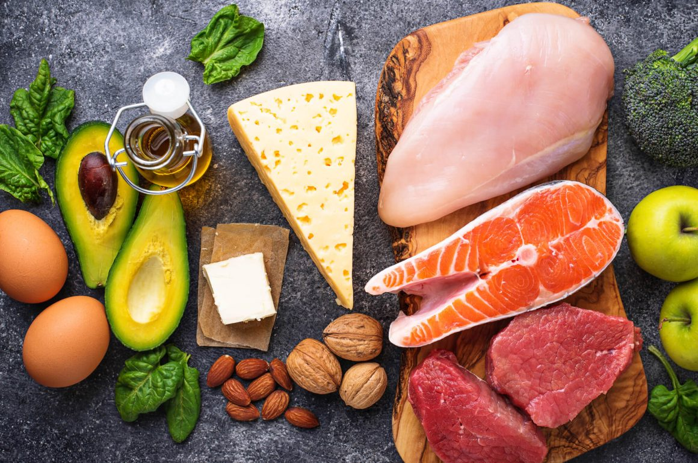
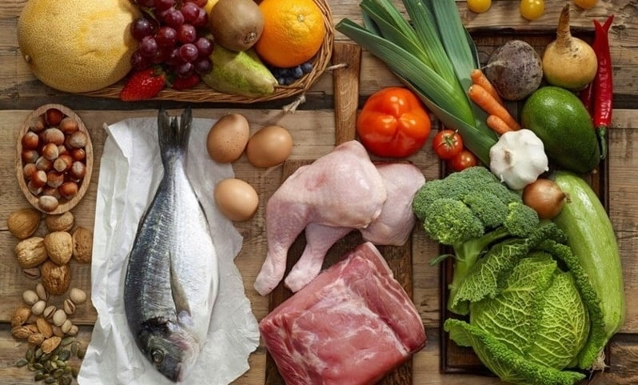
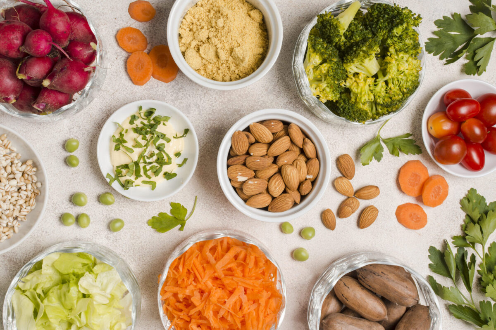

Outros tipos de Dieta: Dieta Cetogênica, Dieta Paleo e Dieta Flexitariana

Dieta Cetogênica
A dieta cetogênica, também conhecida como dieta keto, é uma abordagem nutricional que se concentra em uma ingestão muito baixa de carboidratos, moderada de proteínas e alta de gorduras saudáveis. Essa estratégia nutricional tem ganhado popularidade nos últimos anos devido aos seus benefícios potenciais para a saúde, como perda de peso, controle da glicemia e melhora da saúde cerebral.
Princípios Básicos da Cetogênica
A dieta keto visa colocar o corpo em um estado de cetose, onde ele queima gordura em vez de carboidratos para obter energia. Isso ocorre quando a ingestão de carboidratos é reduzida a menos de 50 gramas por dia, o que força o corpo a buscar outras fontes de combustível.
Alimentos Permitidos na Dieta Cetôgenica
Gorduras Saudáveis: Azeite de oliva, manteiga, óleo de coco, abacate, nozes e sementes.
Proteínas: Carnes magras, ovos, queijos duros, frutos do mar.
Vegetais de Baixo Carboidrato: Folhas verdes, brócolis, couve-flor, pepino, abobrinha.
Frutas de Baixo Carboidrato: Bagas, abacate, coco.
Alimentos Proibidos na Dieta Cetogênica
Carboidratos: Pães, massas, arroz, cereais, batatas, frutas açucaradas.
Açúcares: Açúcar branco, açúcar mascavo, mel, xarope de agave.
Bebidas Alcoólicas: Cerveja, vinho, coquetéis.
Benefícios Potenciais da Dieta Cetogênica
Perda de Peso: A dieta keto pode ser eficaz para a perda de peso devido à sua natureza restritiva de carboidratos e ao aumento da queima de gordura.
Controle da Glicemia: A dieta keto pode ajudar a controlar os níveis de açúcar no sangue, tornando-a uma opção interessante para pessoas com diabetes tipo 2.
Melhora da Saúde Cerebral: Alguns estudos sugerem que a dieta keto pode ter benefícios para a saúde cerebral, incluindo a redução do risco de doenças neurodegenerativas.
Riscos e Considerações
Restrições Alimentares: A dieta keto é muito restritiva e pode ser difícil de seguir a longo prazo.
Efeitos Colaterais: Alguns efeitos colaterais comuns da dieta keto incluem fadiga, náuseas, tonturas e constipação.
Monitoramento Médico: Pessoas com condições de saúde pré-existentes, como diabetes, doenças cardíacas ou distúrbios alimentares, devem consultar um médico antes de iniciar a dieta keto.
Vídeo sobre o assunto

Dieta Paleo
A dieta paleo, também conhecida como dieta paleolítica, é uma abordagem nutricional que se baseia na alimentação dos nossos ancestrais caçadores-coletores. Essa dieta enfatiza o consumo de alimentos naturais e não processados, como carnes magras, peixes, frutos do mar, ovos, vegetais, frutas e nozes.
Princípios Básicos da Dieta Paleo
A dieta paleo exclui alimentos processados, grãos, laticínios e óleos vegetais refinados. A ideia é que esses alimentos não estavam disponíveis para nossos ancestrais e podem não ser ideais para a nossa saúde moderna.
Alimentos Permitidos na Dieta Paleo
Carnes Magras: Frango, peru, carne bovina, carne de porco, cordeiro.
Peixes e Frutos do Mar: Salmão, atum, sardinha, camarão, mexilhão.
Ovos: Orgânicos e de pastagem.
Vegetais: Folhas verdes, brócolis, couve-flor, cenoura, abobrinha.
Frutas: Maçã, banana, morango, framboesa, mirtilo.
Nozes e Sementes: Amêndoas, nozes, sementes de chia, sementes de linhaça.
Alimentos Proibidos na Dieta Paleo
Grãos: Pão, arroz, macarrão, cereais.
Laticínios: Leite, queijo, iogurte, manteiga.
Óleos Vegetais Refinados: Óleo de soja, óleo de canola, óleo de milho.
Açúcares: Açúcar branco, açúcar mascavo, mel, xarope de agave.
Alimentos Processados: Refrigerantes, salgadinhos, biscoitos, doces.
Benefícios Potenciais da Dieta Paleo
Perda de Peso: A dieta paleo pode ser eficaz para a perda de peso devido à sua ênfase em alimentos naturais e não processados.
Melhora da Saúde Geral: A dieta paleo pode ajudar a melhorar a saúde geral, incluindo a redução do risco de doenças crônicas, como doenças cardíacas, diabetes e alguns tipos de câncer.
Melhora da Digestão: A dieta paleo pode ser benéfica para a saúde digestiva, pois exclui alimentos que podem ser difíceis de digerir, como grãos e laticínios.
Riscos e Considerações
Restrições Alimentares: A dieta paleo é muito restritiva e pode ser difícil de seguir a longo prazo.
Deficiências Nutricionais: É importante garantir que você esteja obtendo todos os nutrientes necessários ao seguir a dieta paleo.
Monitoramento Médico: Pessoas com condições de saúde pré-existentes, como diabetes, doenças cardíacas ou distúrbios alimentares, devem consultar um médico antes de iniciar a dieta paleo.
Vídeo sobre o assunto

Dieta Flexitariana
A dieta flexitariana é uma abordagem nutricional que enfatiza o consumo de alimentos de origem vegetal, mas permite a ingestão ocasional de alimentos de origem animal. Essa dieta é uma opção popular para aqueles que desejam adotar uma dieta mais saudável, mas não estão prontos para se tornar vegetarianos ou veganos.
Princípios Básicos da Dieta Flexitariana
A dieta flexitariana se baseia em uma dieta predominantemente vegetariana, com a inclusão ocasional de carnes magras, peixes, frutos do mar e ovos. O objetivo é consumir alimentos de origem vegetal em pelo menos 75% das refeições.
Alimentos Permitidos na Dieta Flexitariana
Vegetais: Folhas verdes, brócolis, couve-flor, cenoura, abobrinha.
Frutas: Maçã, banana, morango, framboesa, mirtilo.
Grãos Integrais: Arroz integral, quinoa, aveia, pão integral.
Leguminosas: Feijão, lentilha, grão-de-bico, ervilha.
Nozes e Sementes: Amêndoas, nozes, sementes de chia, sementes de linhaça.
Carnes Magras: Frango, peru, carne bovina magra, peixe, frutos do mar.
Ovos: Orgânicos e de pastagem.
Laticínios: Com moderação, como iogurte grego e queijo cottage.
Vídeo sobre o assunto
Conclusão: Qual Dieta Escolher? Uma Jornada Pessoal
A escolha entre a dieta cetogênica, paleo e flexitariana é uma jornada individualizada, com prós e contras específicos para cada uma. Não existe uma dieta única que seja a melhor para todos. A decisão ideal depende de seus objetivos pessoais, estilo de vida, condições de saúde e preferências alimentares.
Dieta Cetogênica: Ideal para quem busca perda de peso rápida e controle da glicemia, mas exige um acompanhamento médico e pode ser restritiva a longo prazo.
Dieta Paleo: Focada em alimentos naturais e não processados, pode melhorar a saúde geral e a digestão, mas exige planejamento e pode ser restritiva para quem gosta de variedade.
Dieta Flexitariana: Uma abordagem mais flexível, que combina alimentos de origem vegetal com pequenas quantidades de alimentos de origem animal, ideal para quem busca uma transição gradual para uma alimentação mais saudável.
Considerações importantes ao escolher uma dieta.
Objetivos: Defina claramente seus objetivos, seja perda de peso, melhora da saúde em geral ou controle de alguma doença.
Estilo de vida: Avalie sua rotina e escolha uma dieta que seja compatível com seu dia a dia.
Restrições: Verifique se você possui alguma alergia ou intolerância alimentar e ajuste a dieta de acordo.
Sustentabilidade: A dieta escolhida deve ser sustentável a longo prazo, ou seja, algo que você consiga seguir sem se sentir privado.
Acompanhamento profissional: Consulte um nutricionista para personalizar um plano alimentar adequado às suas necessidades e monitorar seu progresso.
Lembre-se: A nutrição é um processo individual e dinâmico. O que funciona para uma pessoa pode não funcionar para outra. O mais importante é encontrar uma dieta que te proporcione prazer e bem-estar, e que seja sustentável a longo prazo.
Voltar ao blog